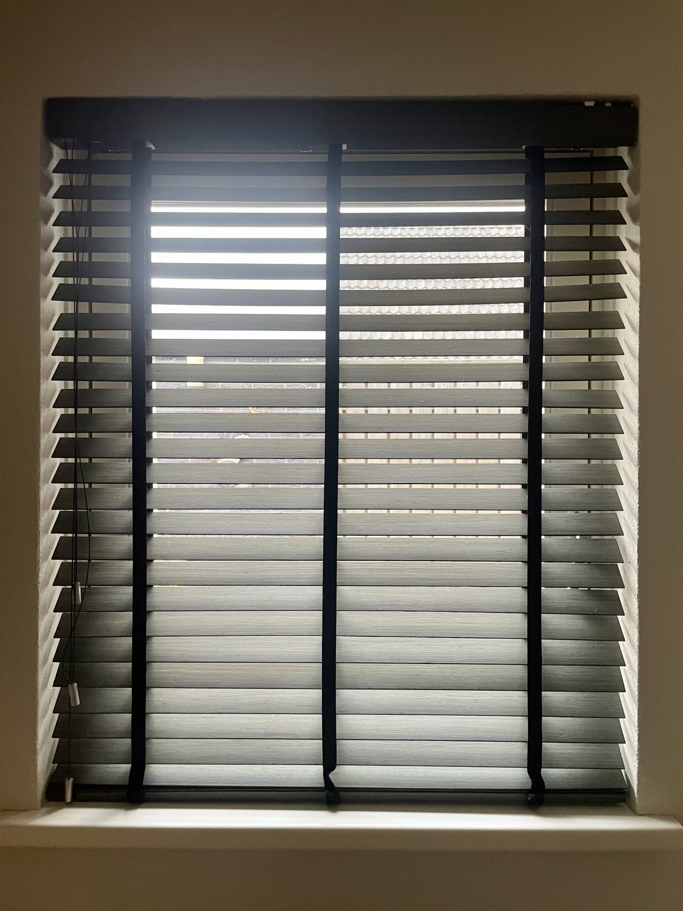

Advies nodig?
Twijfelt u tussen rolluik of screen? Onze specialist komt vrijblijvend langs, meet gratis in en geeft eerlijk advies.
Plan een afspraakAl 47 jaar dé specialist in rolluiken, screens, luifels en zonwering in Oss en omgeving. Wij produceren onze rolluiken in eigen huis én monteren ze vakkundig — eerlijk advies, strak werk en goede nazorg.

Van robuuste rolluiken uit eigen productie tot screens, luifels, markiezen en sfeervolle binnenzonwering — bij Lucky vindt u de complete oplossing, inclusief advies en montage.



Twijfelt u tussen rolluik of screen? Onze specialist komt vrijblijvend langs, meet gratis in en geeft eerlijk advies.
Plan een afspraakEen familiebedrijf dat luistert, eerlijk adviseert en de afspraken nakomt — al 47 jaar de vertrouwde keuze in Oss en omgeving.
Rolluiken worden met de hand in elkaar gezet, gecontroleerd en getest. Scherpe prijs, korte levertijd, altijd op maat.
Wim, Tim en Dennis plaatsen alles netjes en veilig — strak werk en alles opgeruimd achtergelaten.
Familiebedrijf sinds 1975. Duizenden tevreden klanten in Oss en omgeving gingen u voor.
Gratis en vrijblijvend bij u thuis. Wij denken mee over kleur, bediening en het beste type zonwering.

Lucky Zonwering is een echt familiebedrijf, al sinds 1975. Eigenaren Wim en Dennis staan zelf op de steiger: van het eerste advies tot de montage en nazorg krijgt u met de vakmensen zelf te maken. Geen verkooppraatjes, maar eerlijk advies en kwaliteit die jaren meegaat — "Ga voor kwaliteit, kies voor Lucky."
Dankzij eigen productie ruime voorraad voor snelle reparatie — ook aan zonwering van andere merken.
6 dagen per week actief in de regio, dus meestal snel een afspraak. U hoeft niet de hele dag thuis te zijn.
124 reviews van klanten uit Oss en omgeving — eerlijk, betrouwbaar en netjes werk.
Onze klanten waarderen vooral het persoonlijke contact, de kwaliteit, de snelle service en de strakke montage.
"Een pluim en 5 sterren voor de medewerkers die de rolluiken hebben geplaatst! Afspraken volledig nagekomen, alles netjes achtergelaten en de oude rolluiken afgevoerd. Ik ben 200% tevreden."
"8 solar rolluiken gehangen door Wim, Tim en Dennis. We kunnen niet anders dan zeggen dat de mannen echt vakwerk hebben afgeleverd!"
"Horren en rolluiken besteld en ontzettend tevreden. Ze kwamen snel en professioneel inmeten, gaven eerlijk advies en dachten goed mee."
"Snelle service, goede prijs en fijne gasten. We hebben 16 (!) rolluiken laten plaatsen in 1 dag. Alles keurig gedaan, met goede uitleg erbij. We're Lucky 😁"
"Wim en Tim hebben ons volledige huis voorzien van rolluiken. Goede service, fijn contact, strak werk, goede nazorg en het nodige gevoel voor humor. Een enorme aanrader!"
"Vijf rolluiken en een screen geplaatst door Wim en Tim. Uitstekend werk verricht plus een goede service en klantvriendelijke benadering. Een aanrader!"
Bel 0412 - 633 590 of vraag een gratis offerte aan. Wij komen vrijblijvend bij u inmeten.